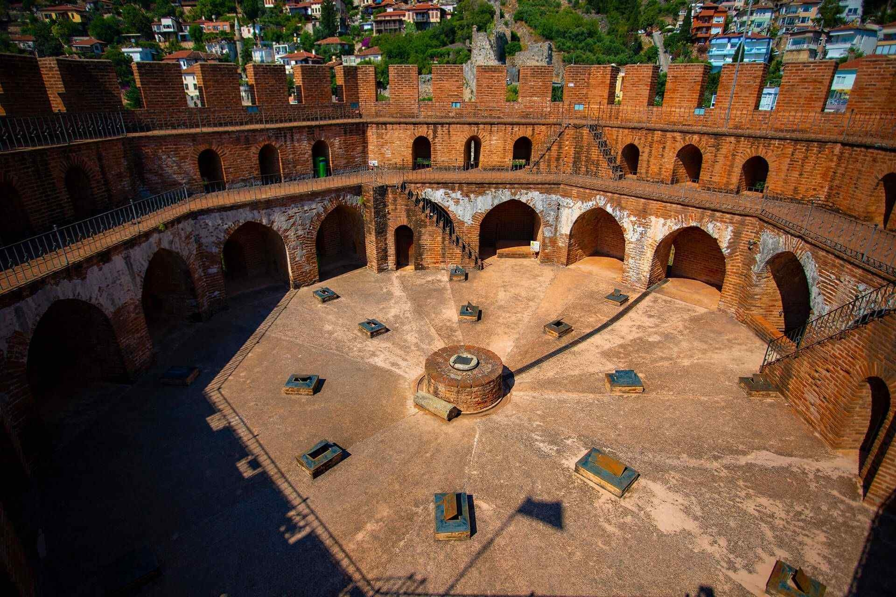

|  |
Ülkemizde en iyi korunagelmiş orta çağ kalelerinden biridir. Alanya Kalesinin bilinen ilk ismi M.Ö. 4 yüzyılda Korakesium dur. Surlarının uzunluğu 6,5 kilometreyi bulan Alanya Kalesi, şehir merkezinde, denizden 250 metreye kadar yükselen bir yarımada üzerindedir. 1221 yılındaki adı “Güzel Dağ” anlamına gelen ‘Kalanoros’ iken Anadolu Selçuklu topraklarına dâhil eden Sultan Alaaddin Keykubat tarafından yeniden imar ettirilmiş, ismi Alaiyye olarak değiştirilmiştir. Yarımada üzerindeki 19 yüzyıl sonuna kadar devam eden onarımlar sonucunda tarihi yapılar ve kent dokusu günümüze kadar ulaşmıştır.
Yerleşmeyi çevreleyen surlar üzerindeki çok sayıdaki burç ve kapı ve düzenlemeler Ortaçağ savunma mimarisinin tüm özelliklerini bir arada sunmaktadır. Bu savunma unsurlarının yan sıra Kızılkule, Tersane, Tophane, Süleymaniye Camii, Bedesten, Akşebe Türbe ve Mescidi, Andızlı Camii, Gemili Mescid, Orta Kapı gibi mutlaka görülmesi gereken anıt yapılar Selçuklu ve Osmanlı Döneminin eşsiz örnekleridir. Alanya Kalesi’nin bir diğer özelliği ise Kale içinde, yaşayanların su gereksinimi sağlamak üzere temiz su havzalı büyük hacimli sarnıçların yanı sıra küçük boyutlu sarnıçların sayısının oldukça fazla olmasıdır. Kalenin altı kapısı bulunmaktadır.
Günümüzde iki mahallenin yer aldığı sur içi yerleşimi kesintisiz M.Ö 4 yüzyıldan itibaren devam etmiş ve günümüze ulaşmıştır. Taş yollardan yürüyerek, ahşap ve kagir tarihi evlerdeki dokuma tezgahlarında ipek ve pamuklu dokuma yapılışını görebilir, flora ve faunayı keşfedebilirsiniz. Ayrıca kaleye çıkan yol üzerinde ve limana egemen yamaçlarında restoran ve kafeteryalar vardır. Kale taşıt trafiğine açıktır. Toplu taşım imkanı vardır. Yürüyerek yaklaşık 1 saatte çıkılabilir. Alternatif bir diğer ulaşım aracı ise teleferiktir.
Alanya Kalesinin en üst noktasında etrafı surlarla çevrili bir alan Alanya Kalesi İçkale’si olarak adlandırılmaktadır. İçkale günümüzde açık hava müzesi gibi gezilebilen bir bölümdür. Burada Sultan Sarayı, çok sayıda sarnıç, koğuşlar ve bir şapel görülebilir. Ayrıca yüksekte yer alması nedeniyle Alanya ve çevresine panoramik bir bakış kazandırır. Yapılan düzenlemeler ile alan yürüme engelliler için de gezilebilir durumdadır.
|